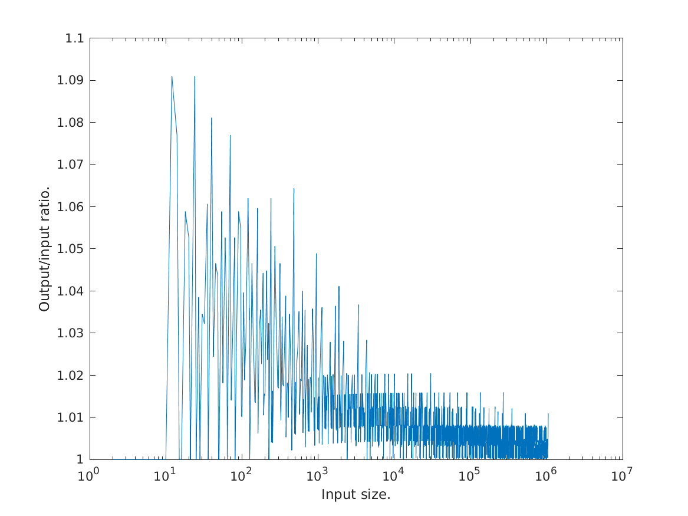

This is where navigation should be.
DEMO_NEXTFASTFFT - Next fast FFT number
Description
This demo shows the behaviour of the nextfastfft function.

Benchmark of the FFT routine
The figure shows the sizes returned by the nextfastfft function
compared to using nextpow2. As can be seen, the nextfastfft
approach gives FFT sizes that are much closer to the input size.

Efficiency of the table
The figure show the highest output/input ratio for varying input
sizes. As can be seen, the efficiency is better for larger input
values, where the output size is at most a few percent larger than
the input size.